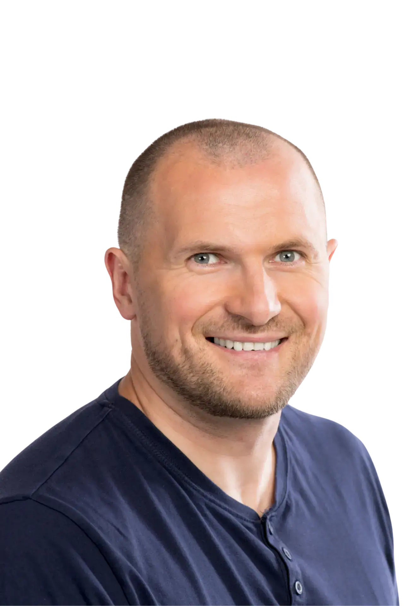

Ve firmě rozhoduješ, vyděláváš a neseš tlak.
Doma je ale pocit, že Ti žena a děti mizí před očima.

Možná si říkáš, že je toho teď jen moc. Moc práce. Moc chaosu. Moc odpovědnosti. Jenže problém není jen tlak kolem Tebe.
Doma máš být opora. Ale přicházíš vyčerpaný a vzdálený.
Máš být přítomný. A přitom Ti děti mizí před očima.
Máš rozhodovat, vydělávat, vést. Tlak nikdy nekončí.
Problém je, že ses možná začal schovávat za výkon a přestal vést tam, kde na tom záleží nejvíc.
To, co Tě v byznysu udělalo silným, Tě doma oslabuje. Ukážu Ti konkrétní mechanismus.
Tiché vzorce, které fungují roky, než se ozvou. A proč si jich většina chlapů všimne až pozdě.
Tlak k životu chlapa patří. Jde o to, co s Tebou tlak dělá — a kam se schováváš.
Konkrétní signály úniku do výkonu, telefonu, mlčení.
První kroky, které můžeš udělat hned — dřív, než Ti doma začne téct krev doopravdy.
Před 7 lety jsem spoluzaložil Restart muže. Našimi tréninky prošlo přes 60 000 chlapů.
Teď poprvé otevírám tohle téma přímo pro podnikatele, majitele firem a chlapy, kteří vedou. Protože přemýšlí jinak než běžný muž chodící do regulérní práce.
Právě u nich vídám jeden opakující se vzorec: navenek rostou, vydělávají a nesou odpovědnost — ale doma ztrácejí půdu pod nohama. A velmi často jsou se svými problémy a tlakem sami.
Když to chlap nepojmenuje včas, nezačne se rozpadat jen vztah. Začne se rozpadat i on sám.
Tenhle webinář je zrcadlo pro chlapy, kteří už nechtějí dál utíkat do výkonu a nechat doma vykrvácet to, na čem jim ve skutečnosti záleží nejvíc.
Registrací souhlasíš se zpracováním e-mailu, abych Ti mohl poslat přístup na webinář a občas i další novinky. Z odběru se můžeš kdykoliv odhlásit jedním kliknutím. Podrobnosti najdeš v Zásadách zpracování osobních údajů.
Odkaz na webinář Ti pošleme na e-mail. Zkontroluj i spam.